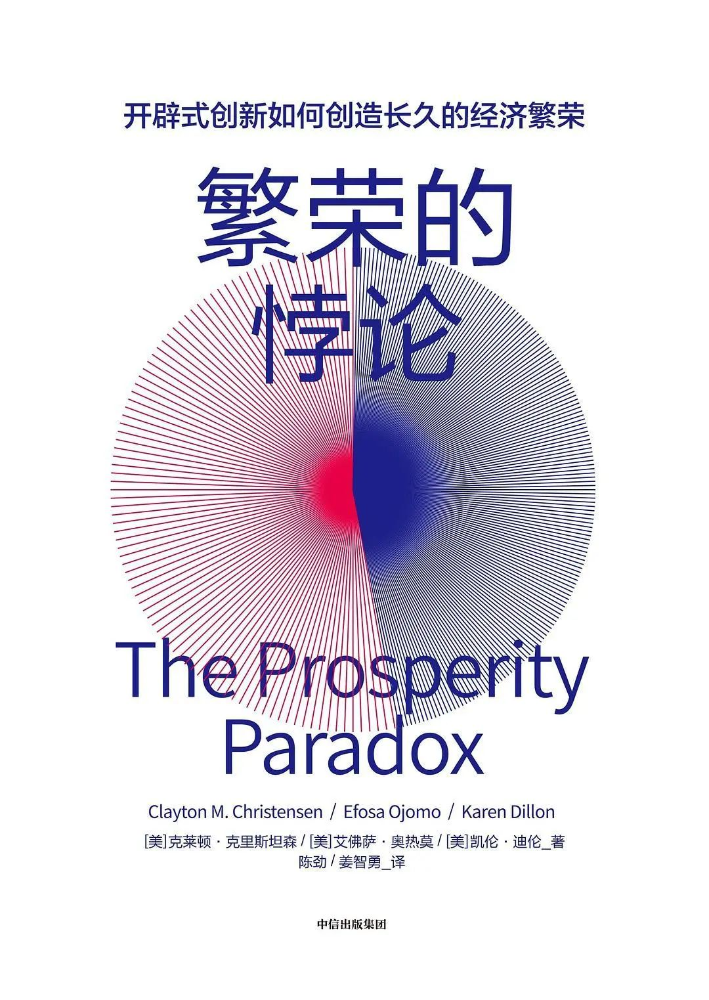

政观荐书 | 克莱顿·克里斯坦森《繁荣的悖论》
政文观止Poliview
微信号 zhengwenguanzhi
功能介绍 从一群年轻人的视角出发，专业、专注、专解海内外比较政治经济研究的前沿佳作。
__发表于
以下文章来源于芥末财经 ，作者克里斯坦森等
芥末财经 .
法律 财经 新媒体
作者简介： 克莱顿·克里斯坦森（Clayton M. Christensen）（1953-2020），哈佛商学院教授、管理学，著有《创新者的窘境》《创新者的解答》《你要如何衡量你的人生》等10多部重量级著作。他提出的颠覆创新的商业理论，影响了包括迪·格鲁夫、比尔·盖茨在内的全球企业家。克莱顿·克里斯坦森曾被《纽约客》评为“具有深度影响力的商业思考者”，被《经济学人》杂志评为“全球引领性的管理智者”。他曾五次获得“麦肯锡奖”，于2011年和2013年被Thinkers50评为“全球50大商业思想家”之一。

荐书简介
全球贫困是全世界最棘手的问题之一。现有的解决办法过多地依赖试错，从教育到医疗，从基础设施到根治腐败。我们总是先找到需要帮助的地区，再用海量资源漫灌这些地区，然后坐等其成。 克莱顿·克里斯坦森在本书中揭示了一种悖论：扶贫本身无疑是高尚的，但它未能形成持续一致的结果，有时甚至把问题变得更严重——全球至少有20个国家出现了越扶越贫的情况，而且是在接受了价值几十亿美元的援助之后发生的。
克里斯坦森为摆脱贫穷指出了一条更好的出路，那就是开辟式创新。他在书中探讨了韩国、日本、美国、中国等国家的开辟式创新案例，解析了胜家缝纫机、福特T型车、柯达公司、美国银行、索尼、丰田、起亚、三星、宾堡、格兰仕、尼日利亚的诺莱坞、肯尼亚M- PESA移动支付平台、非洲的Celtel移动电话服务、墨西哥的阿苏卡诊所、MicroEnsure保险等商业案例，阐释了开辟式创新的模型、要素、实践和原则，以及开辟式创新对一国及全球的影响。开辟式创新能够启动一个国家的经济引擎，能够帮助创新者和企业家发现未消费市场，为一国增加本地就业和全球就业，继而实现国家繁荣和全球繁荣。创新者和企业家苦苦寻求商机，寻求增长，寻求市场，这本书将转变他们的思维模式，让他们把眼光转向庞大的未消费市场。
《繁荣的悖论》不只是一部商业著作，它更是行动的号角，是所有追求让世界变得更美好、更繁荣的人们再次出发的起点，而开辟式创新就是企业和国家走出繁荣的悖论的答案。
目录
推荐序
译序
前言
第一部分 开辟式创新的力量
第一章 什么是繁荣的悖论
第二章 创新天生不同
第三章 生于忧患
第四章 推动与拉动:两种策略的故事
第二部分 创新如何为大众带来繁荣
第五章 美国创新故事
第六章 东西方碰撞的火花
第七章 墨西哥的效率式创新
第三部分 冲破阻碍
第八章 只有良法是不够的
第九章 腐败本身不是问题，而是解决方案
第十章 基础设施的悖论
第四部分 未来的行动方案
第十一章 从繁荣的悖论到繁荣的进程
附录 换一种眼光看世界
致谢
注释
书摘
如果我们问投资者，为什么不去某些地区投资，或者问一些地区的居民，为什么国家的经济不见起色，在可能得到的所有答案中，“腐败”几乎总是排在前面的。在国际货币基金组织最近发布的一项估算中，单单全球贿赂成本一项，每年竟达到1.5 万亿~2 万亿美元之高，而贿赂只是腐败可能的形式之一，所以，腐败的整体经济成本和社会成本要比这一数字高出很多。腐败问题危害极大、蔓延极广。尽管全世界每年投入数以亿计的资金治理腐败，但它依然顽固地存在于很多地方。
腐败，或者说腐败形成的威胁，对贫困国家的冷却效应是很难估量的。仅仅是风闻腐败二字，投资者就会很惊恐，这些投资本来可以帮助这些贫困国家创造财富和繁荣的。由此可见，腐败的影响极大。
认识腐败
腐败不是一种新现象，有的富裕国家曾经和现在一些贫困国家一样腐败。但是，腐败同样不是永久现象。即使是全球最受尊敬的国家，偶尔也会发生个别的贪腐现象，但是，腐败早已不是这些国家文化的主要部分了。是什么带来了这一改变？
根据“透明国际”最新公布的数据，“绝大多数国家在终结腐败的斗争中没有取得进展，或者进展极为有限”。所以说，即使在严密的国际关注之下，即便拥有海量用于打击腐败的资源，甚至有些反腐项目从娃娃抓起，反复教育孩子建立最基本的诚实正直观念，然而，各国在反腐方面的进展依然极为缓慢。
相比于那些有幸生在富裕国家里的人，生在贫困国家的人并非天生缺少某种道德素养。也不能说他们完全不知道还有更好的道德选择。腐败对他们来说，也许就是一种相对更好的选择，一种权宜之计，一种实用工具，因为他们所处的环境没有给予他们更加符合道德标准的选择。人们雇用腐败来完成某些“未达成的用户目标”，说得更详细些，腐败可能是用来帮助人们在特定环境中实现进步的。
要怎样做才能减轻腐败呢？
很多贫困国家的政府真心实意抓反腐，不断地把非常有限的资源投到大刀阔斧的反腐斗争中去。它们为什么不试着把工作重心转移到推动新市场的开辟上，以帮助人们解决日常生活中的难题？只要开辟出足够多的市场，让人们从这些市场的成功中受益，政府就能收获更多的收入，并用这些收入来改善司法系统、执法系统和立法系统。不仅如此，新市场还会创造新的就业机会，这些就业机会可以替代腐败，切实地成为人们积累财富的新手段。
一个组织通过商业模式纳入经营之内的要素越多，该组织减轻腐败的机会就越大。从某种意义上来说，这就像一个组织拥有了一块崭新的画布，它可以在画布上书写新的规则，定义新的奖惩制度。这正是罗山公司（Roshan）这家领先的阿富汗通信企业控制腐败的做法。
也许很多人已经忘了20 年前在阿富汗打电话是一种怎样的体验。幸好有菲利普·奥尔斯瓦尔德（Philip Auerswald），他的著作《正在到来的繁荣》（The Coming Prosperity ）能够帮助我们回忆当时的情景。奥尔斯瓦尔德引述了罗山公司创始人凯利姆·库拉（Karim Khoja）的一段话：“除非你富得流油，否则，你要走上几百公里，到最近的邻国去打电话。当时的阿富汗只有一家移动电话公司，它的收费标准是500 美元一部手机，每分钟12 美元的国际长途通话，每分钟3 美元的国内通话。即使这样，如果不‘表示表示’，你连电话公司销售人员的面都见不到。”
时至今日，罗山正在为大约600 万人提供服务，它还为自己赢得了合乎道德标准的美誉。罗山公司共有1 200 名员工，几乎全部由阿富汗本地人组成。然而，这一切来得并不轻松。2009 年，罗山为每一位阿富汗员工支付的培训开支超过了1 500 美元，这些员工得到的不仅是技术培训，还包括业务培训和商业伦理方面的培训。
然而，罗山公司所做的并不仅仅是商业伦理的培训，它希望人们永远选择人性中良善的一面。这家公司清楚了解进一步整合的必要性。为此，罗山建立了专门的政府关系部门，以处理腐败相关的指控和新闻报道。无论何时，只要遭到索贿，员工必须立即向这个部门汇报。该部门将把情况通报给阿富汗政府相关部门负责人、涉事部门和媒体。今天，罗山公司被看作阿富汗希望的灯塔和国家之宝。
对大多数人来说，尤其对生活在贫困国家里的人们来说，腐败只是一种达到目的的手段而已。只要给他们一种替代性方案，多数人不会继续“雇用”腐败来谋求发展。强制施行的道德通常是一种极其昂贵的策略，它会带来好坏参半的复杂结果。但是如果没有这种强制性的道德，就不会有随之开辟的新市场。没有比开辟新市场更理想的反腐之道了。
以21 世纪初美国的音乐产业为例，在几次相对较快的更新迭代之后，盗版和非法音乐分享文化早已被用户付费的流媒体音乐取而代之了。如果你的年纪足够大，一定还记得“混音带”（Mixtape）的黄金时代。你一定记得，双卡录音机这一伟大创新出现之后，复制一盘磁带是多么轻松的事。只要买上一盘磁带，就能轻松地为自己和朋友们复制很多盘一样的磁带。当时，很多人都会为派对准备混音带，送混音带给自己的女朋友或者男朋友，长途自驾旅行更是离不开混音带。有了自制混音带，我们就能为自己制作蒙太奇式的音乐合辑，想听就听。音乐行业的管理者用了很多年的时间游说国会出台更加严格的版权保护法律，并且耗费数百万美元用于各种宣传活动，力图让群众提高认知，不再通过这样的方式“盗窃”音乐产品。然而，这些努力丝毫没有改变拷贝磁带的做法。
实际上，音乐行业更大的劫难还在后面，它就是纳普斯特（Napster）。这是一种开创性的点对点文件分享技术，它让在家里翻录磁带的做法变成了老古董。忽然之间，全世界的人们都能相互分享音乐了：任何人，在任何时间，分享任何音乐。人们真的这样做了，他们不加选择地大量分享。情况变得一发不可收拾，以至于音乐行业里的每一家公司都把纳普斯特告上了法庭。纳普斯特输掉了官司，停止了运营，并最终宣布破产。尽管音乐行业赢得了针对纳普斯特的战斗，但它输掉了阻止热爱音乐的美国人非法分享音乐的战役。非法分享从此转入更深一层的地下运营。
斯蒂芬·威特（Stephen Witt）是一名记者，他出类拔萃的自白体著作《谁把音乐变免费》（How Music Got Free ）描述了自己在盗版音乐世界里令人激动的初次体验以及最后回心转意的过程。威特之所以不再盗窃音乐，并不是因为道德意识的突然觉醒。相反，多年以来，威特在偷偷摸摸的音乐盗版产业里怡然自得地享受了多年。他之所以在2014 年决定不再盗版，主要是因为这“太麻烦了”。威特在书中写道：“盗版变得越来越贵，越来越耗费时间，到了一定程度之后，你会发现，其实订阅“声破天”（Spotify）和“网飞”（Netflix）的服务更划算。‘私人’数字财产的个人所有制正在消失；在新的范式之下，数字商品属于一种企业财产，用户购买的是这些数字商品的有限访问权。当我第一次使用声破天时，我立刻意识到，这一次是公司赢了——它的巨大规模和便利性让种子下载显得老旧不堪。这是我第一次看到，合法企业的产品比地下世界的产品还要好。”
音乐行业也许能偶尔赢得一些盗版官司，但是，只有真正理解了人们为什么“雇用”这些替代方案，正版唱片公司才有可能占据上风，完全掌控属于自己的打地鼠游戏。这个道理在整个社会范围内都是有效的。我们也许能够成功地打击个别腐败政客或者贪污行为，但是，如果没有真正理解人们为什么选择腐败手段，我们就只能不断地把辛苦得来的资源用在抗击腐败的斗争中，这种投入是看不见底的。这样说的目的，并不是要大家对腐败行为睁一只眼闭一只眼，坐等开辟式创新来对付腐败。我们知道，这个过程是需要时间的。我们想说的是，想为正在进行的反腐斗争赢得一线胜利的曙光，就必须大刀阔斧地运用开辟式创新来支持我们正在做出的努力。
许多人认为，建立强有力的制度、扫除腐败是一个国家经济发展的前提条件。然而，审视这个广为人们接受的看法时，我们一次又一次地发现，创新，尤其是开辟式创新，能够成为改变发生的催化剂。无论是在健全的制度中，还是在腐败的环境里，开辟式创新都能够拉动必需的要素。这些要素会随着开辟式创新一起到来。
编辑：康张城